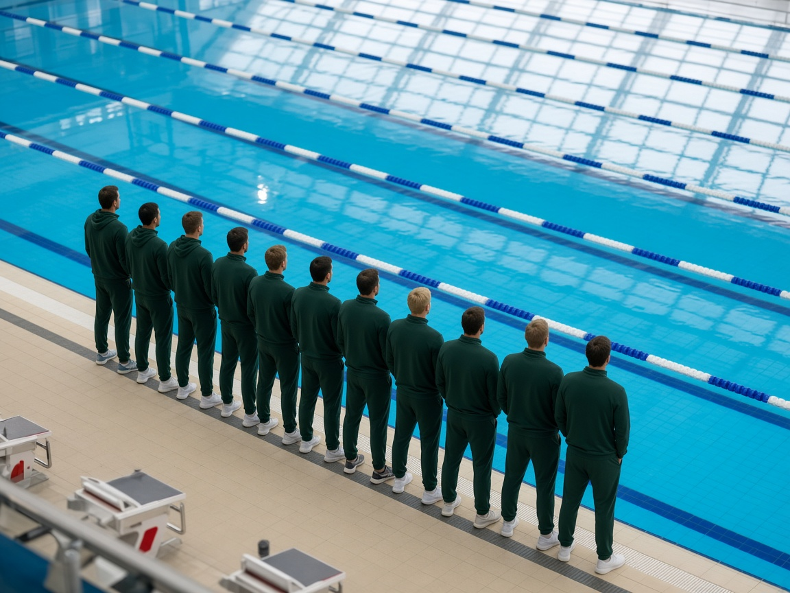
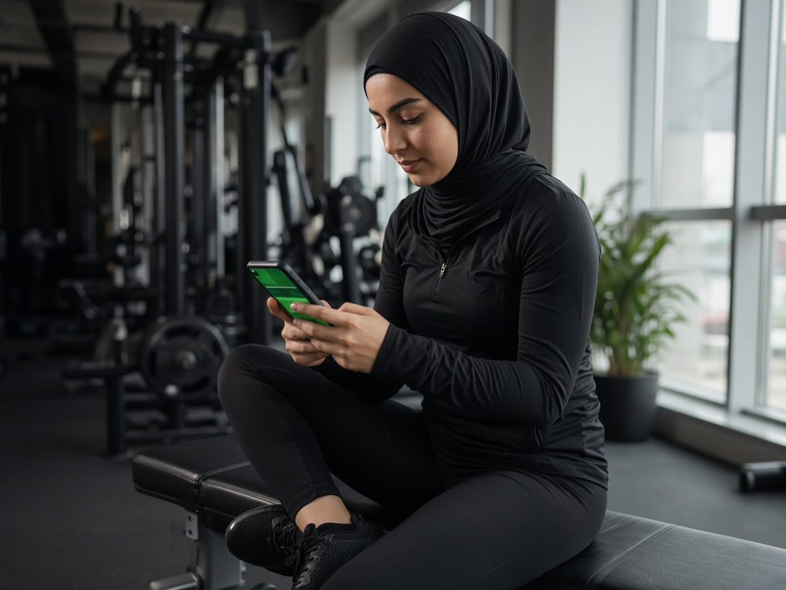

Website pages
Every public page of kada.gov.kw with its owner, status and both languages. Open a page to edit it section by section.
| Page | Page type | Languages | Content owner | Last edit | Status | |
|---|---|---|---|---|---|---|
| Home1 | ||||||
Home page/ | Landing page13 sections | AREN | Media & Communications | Dana Al-Kandari23 · 10 · 2026 · 09:40 | Draft v12 in progress | |
| About KADA7 | ||||||
About KADA/about | Content page6 sections | AREN | Media & Communications | Dana Al-Kandari14 · 09 · 2026 | Published | |
Vision & mission/vision | Content page5 sections | AREN | Executive Office | Dana Al-Kandari14 · 09 · 2026 | Published | |
Board Members/board | Content page15 profiles | AREN | Executive Office | Dana Al-Kandari20 · 10 · 2026 · 09:02 | Draft · EN missing | |
Organisational structure/structure | Content page2 sections | AREN | Executive Office | Abdullah Al-Mutairi30 · 08 · 2026 | Published | |
Departments/departments | Content page7 sections | AREN | Executive Office | Dana Al-Kandari30 · 08 · 2026 | Published | |
WADA compliance/wada | Content page6 sections | AREN | Legal & Compliance | Salem Al-Dosari22 · 10 · 2026 | Published | |
Annual Report 2025 — summary page/about/annual-report-2025 | Content pageNew page | AREN | Executive Office | Abdullah Al-Mutairi18 · 10 · 2026 | Draft · AR missing | |
| E-services9 | ||||||
E-services (all services)/services | Services hub3 sections | AREN | Media & Communications | Dana Al-Kandari05 · 10 · 2026 | Published | |
Athlete sanctions registry/sanctions | Service pageRecords: Results Management | AREN | Results Management | Dana Al-Kandari12 · 10 · 2026 | Published | |
Prohibited List & medicine checker/prohibited | Service page4 sections | AREN | Education & Awareness | Abdullah Al-Mutairi01 · 10 · 2026 | Scheduled · 01 · 01 · 2027 | |
Therapeutic use exemption (TUE)/tue | Service pageForm · 5 sections | AREN | Results Management | Dana Al-Kandari20 · 10 · 2026 · 15:30 | Awaiting approval | |
Speak Up — confidential reporting/speakup | Service pageForm texts only · reports never appear here | AREN | Intelligence & Investigations | Dana Al-Kandari21 · 10 · 2026 | Published | |
Data access request/data-request | Service pageForm · 3 sections | AREN | Legal & Compliance | Dana Al-Kandari19 · 10 · 2026 | Published | |
Tenders & procurement/tenders | Service pageRecords: Tenders & suppliers unit | AREN | Finance & Procurement | Dana Al-Kandari22 · 10 · 2026 | Published | |
Supplier registration/supplier | Service pageForm · 2 sections | AREN | Finance & Procurement | Dana Al-Kandari22 · 10 · 2026 | Published | |
KADA AI assistant/assistant | Service page4 sections | AREN | IT & Digital Services | Abdullah Al-Mutairi02 · 11 · 2026 | Published | |
| Education1 | ||||||
Anti-doping education programme/education | Content page5 sections | AREN | Education & Awareness | Dana Al-Kandari08 · 10 · 2026 | Published | |
| Help & contact2 | ||||||
Frequently asked questions/faq | Content page29 questions · 9 categories | AREN | Media & Communications | Dana Al-Kandari28 · 09 · 2026 | Published | |
Contact us/contact | Content pageForm · 3 sections | AREN | Media & Communications | Dana Al-Kandari11 · 09 · 2026 | Published | |
| Footer & legal4 | ||||||
The KADA platform/platform | Content page7 sections | AREN | IT & Digital Services | Abdullah Al-Mutairi25 · 09 · 2026 | Published | |
Privacy policy/privacy | Content pageNew page | AREN | Legal & Compliance | Dana Al-Kandari17 · 10 · 2026 | Draft · legal review | |
Accessibility statement/accessibility | Content page2 sections | AREN | IT & Digital Services | Abdullah Al-Mutairi02 · 11 · 2026 | Hidden from site | |
Sitemap/sitemap | Generated automaticallyBuilt from the navigation menus | AREN | IT & Digital Services | System02 · 11 · 2026 | Auto-updated | |
| Signed-in areas2 | ||||||
My account (athletes & public)/account | Signed-in areaLabels, help texts & notices only | AREN | IT & Digital Services | Abdullah Al-Mutairi06 · 10 · 2026 | Published | |
Supplier dashboard/supplier-dashboard | Signed-in areaLabels, help texts & notices only | AREN | Finance & Procurement | Abdullah Al-Mutairi22 · 10 · 2026 | Published | |
The editor for «» is being prepared
In this demo the home page editor is fully working, as the example of how every page will be managed. This page will get the same editor in the build phase.
- 1Sections in orderThe page is split into its sections; hide, reorder or add sections.
- 2An editor for every elementTexts in Arabic and English, images, buttons and their links, lists.
- 3Review, then publishSaved as a draft, approved by a publisher, then published with its version history.
News
Announcements, press releases and decisions. Each item is written in Arabic and English, approved, then shown on the News page, the home page and the app.
| News item | Category | Date | Languages | Last edit | Status | |
|---|---|---|---|---|---|---|
WADA 2026 compliance audit closes with no critical findingsnews/wada-compliance-2026 | Press release | — | AREN | Dana Al-Kandari22 · 10 · 2026 | Awaiting approval | |
Education programme results · Q3 2026news/education-q3-2026 | Education | — | AREN | Faisal Al-Anzi21 · 10 · 2026 | Awaiting approval | |
 Nutrition supplements: what athletes must checknews/supplements-check | Education | — | AREN | Dana Al-Kandari17 · 10 · 2026 | Draft · EN missing | |
Prohibited List 2027 takes effect on 1 Januarynews/prohibited-list-2027-effective | Announcement | 15 · 12 · 2026 | AREN | Dana Al-Kandari15 · 10 · 2026 | Scheduled · 15 · 12 · 2026 | |
Medicine checker updated for the 2027 Prohibited Listnews/medicine-checker-2027 | Announcement | 23 · 10 · 2026 | AREN | Dana Al-Kandari23 · 10 · 2026 | Published | |
The 2027 Prohibited List is now available in ArabicPinned on the home page | Announcement | 01 · 10 · 2026 | AREN | Salem Al-Dosari01 · 10 · 2026 | Published | |
 The education programme reaches 4,500 athletes and coaches in its third seasonnews/education-season-3 | Education | 28 · 09 · 2026 | AREN | Dana Al-Kandari28 · 09 · 2026 | Published | |
Disciplinary Committee decision: four-year sanction in bodybuilding casenews/decision-bodybuilding-2026 | Decision | 22 · 09 · 2026 | AREN | Salem Al-Dosari22 · 09 · 2026 | Published | |
 KADA launches digital doping-control platform for field inspectorsnews/digital-doping-control | Press release | 15 · 09 · 2026 | AREN | Dana Al-Kandari15 · 09 · 2026 | Published | |
Registration opens for the National Clean Sport Conference 2026news/conference-2026-registration | Announcement | 03 · 09 · 2026 | AREN | Dana Al-Kandari03 · 09 · 2026 | Published | |
 Anti-Doping Essentials: national-team athletes must complete it before the 2027 seasonnews/essentials-2027-season | Announcement | 10 · 08 · 2026 | AREN | Dana Al-Kandari10 · 08 · 2026 | Published |
Editing · press release
اختُتم تدقيق الامتثال الذي أجرته الوكالة العالمية لمكافحة المنشطات (وادا) لعام 2026 لدى الوكالة الكويتية لمكافحة المنشطات دون أي ملاحظات حرجة في ما يتعلق بالمدونة العالمية لمكافحة المنشطات والمعايير الدولية.
«نتيجة تعكس عمل فريق كامل وشراكة الاتحادات الرياضية» — المدير العام
وأشاد تقرير التدقيق ببرنامج التثقيف وبإجراءات إدارة النتائج.
The World Anti-Doping Agency's 2026 compliance audit of the Kuwait Anti-Doping Agency has closed with no critical findings against the World Anti-Doping Code and International Standards.
"A result that reflects the work of a whole team and the partnership of the sports federations." — Director General
The audit report commended the anti-doping education programme and results-management procedures.
SEO & sharing
92 / 100Featured image & media
Publishing
Draft · v3Versions
Accessibility & quality
Research & publications
Rules, policies, annual reports, research papers, educational material and forms — PDF files in Arabic and English, published on the Research & publications page and used by the AI assistant.
| Document | Category | Languages | Version | Downloads | Date | Status | |
|---|---|---|---|---|---|---|---|
PDF KADA National Anti-Doping Rules (2027 edition — effective 1 January 2027)2.4 MB | Rules & regulations | AREN | v2027.1 | 1,902 | 15 · 09 · 2026 | Published | |
PDF KADA National Anti-Doping Rules (2021 edition — in force until 31 December 2026)2.1 MB | Rules & regulations | AREN | v2021.3 | 96 | 01 · 01 · 2021 | Archive on 01 · 01 · 2027 | |
PDF Prohibited List 2027 — Arabic translation & simplified guide3.8 MB | Rules & regulations | AR | v1.2 | 2,214 | 01 · 10 · 2026 | Published | |
PDF Responsible AI Policy520 KB | Policies | AREN | v1.0 | 188 | 05 · 09 · 2026 | Published | |
PDF Privacy & Personal Data Protection Policy640 KB | Policies | AREN | v3.1 | 388 | 12 · 03 · 2026 | Published | |
PDF KADA Annual Report 20259.2 MB | Annual reports | AREN | v1.0 | 640 | 30 · 04 · 2026 | Published | |
XLSX Testing statistics 2025 — open data180 KB | Annual reports | AREN | v1.1 | 276 | 30 · 04 · 2026 | Published | |
PDF Supplement contamination risk among Kuwaiti gym users — survey findings1.6 MB | Research papers | AREN | v1.0 | 154 | 18 · 06 · 2026 | Published | |
PDF Supplements: a risk guide for athletes and gym users2.7 MB | Educational material | AREN | v2.0 | 512 | 20 · 05 · 2026 | Published | |
ZIP School presentation kit (ages 12–17)18 MB | Educational material | AREN | v1.4 | 230 | 01 · 09 · 2026 | Published | |
PDF Therapeutic Use Exemption (TUE) application form220 KB | Forms | AREN | v2026.1 | 842 | 01 · 01 · 2026 | Published | |
PDF Data access request form (Privacy Policy)110 KB | Forms | AREN | v1.0 | 61 | 12 · 03 · 2026 | Published |
Top downloads · 30 days
Repository rules
Media centre
Photo albums and videos shown in the public Media Centre, with the brand assets, press contact and accreditation details for journalists.
Photos & video
9 items · drag to change the order on the pageBrand assets
Files journalists and partners can downloadPress contact
Press accreditation
Requests from journalists arrive here by email to the Media CenterApproval queue
Everything sent for approval in one place: what is still waiting, what was approved and published, and what was rejected — with the reason.
| What was sent | Sent by | Status | Decision | |
|---|---|---|---|---|
WADA 2026 compliance audit closes with no critical findingsNews | Dana Al-Kandari22 · 10 · 2026 · 10:14 | Awaiting approval | Not decided yet | With the approver |
Registration opens — National Clean Sport ConferenceEvent | Faisal Al-Anzi21 · 10 · 2026 · 16:40 | Awaiting approval | Not decided yet | With the approver |
Education programme results · Q3 2026News | Faisal Al-Anzi21 · 10 · 2026 · 11:02 | Awaiting approval | Not decided yet | With the approver |
Therapeutic Use Exemptions — updated guidancePage | Dana Al-Kandari20 · 10 · 2026 · 15:30 | Awaiting approval | Not decided yet | With the approver |
Nutrition supplements: what athletes must checkNews | Dana Al-Kandari17 · 10 · 2026 · 13:20 | Rejected | Salem Al-Dosari · 18 · 10 · 2026 Reason: One language is missing or incomplete The last two paragraphs have no English version. | Edit and resend |
Board MembersPage | Dana Al-Kandari19 · 10 · 2026 · 11:45 | Rejected | Salem Al-Dosari · 20 · 10 · 2026 Reason: Missing approvals (legal / DG) The member list needs the Executive Office's confirmation before it is published. | Edit and resend |
Medicine checker updated for the 2027 Prohibited ListNews | Dana Al-Kandari22 · 10 · 2026 · 16:05 | Approved | Salem Al-Dosari · 23 · 10 · 2026Published on the website | |
Prohibited List 2027 takes effect on 1 JanuaryNews | Dana Al-Kandari15 · 10 · 2026 · 12:10 | Approved | Salem Al-Dosari · 16 · 10 · 2026Publishes automatically on 15 · 12 · 2026 | |
Home page — TUE added to the services stripPage | Dana Al-Kandari01 · 10 · 2026 · 14:30 | Approved | Salem Al-Dosari · 02 · 10 · 2026Published on the website | |
The 2027 Prohibited List is now available in ArabicNews | Dana Al-Kandari30 · 09 · 2026 · 10:00 | Approved | Salem Al-Dosari · 01 · 10 · 2026Published on the website | |
KADA National Anti-Doping Rules (2027 edition — effective 1 January 2027)Document | Dana Al-Kandari14 · 09 · 2026 · 09:15 | Approved | Salem Al-Dosari · 15 · 09 · 2026Published on the website |
Website pages
Every public page of kada.gov.kw with its owner, status and both languages. Open a page to edit it section by section.
Main navigation
Drag to reorder · labels in both languages · changes publish after approval| Label (EN) | Label (AR) | Target | Children | |
|---|---|---|---|---|
| Home | الرئيسية | / | — | Visible |
| About Us | عن الوكالة | about | 6 | Visible |
| E-Services | الخدمات الإلكترونية | services | 9 | Visible |
| Education | التثقيف | education | — | Visible |
| Media | الإعلام | media | 4 | Visible |
| FAQs | الأسئلة الشائعة | faq | — | Visible |
| Contact | تواصل معنا | contact | — | Visible |
Redirects
Preserve old URLs after the migration · SEO safe (301)| From | To | Hits · 30 d |
|---|---|---|
| /ar/news.php?id=812 | /news/medicine-checker-2027 | 1,204 |
| /en/prohibited-list | /prohibited | 3,918 |
| /tenders.aspx | /tenders | 466 |
Footer & legal links
Site-wide announcement bar
A short notice above the header on every pageContact details & social media
Used in the footer, the Contact page and the AI assistantShared blocks
Edit once — the change appears on every page that uses the blockAdd a section
Sections use the site's approved design, so every page stays consistent. The new section is added at the end of the page and is filled in both languages.
Page settings · Home page
Versions · Home page
Every saved draft and every publication is kept. You can compare any two versions or restore an older one as a new draft.
New page
Choose a starting layout. The page is created as a draft in both languages and only goes live after approval.